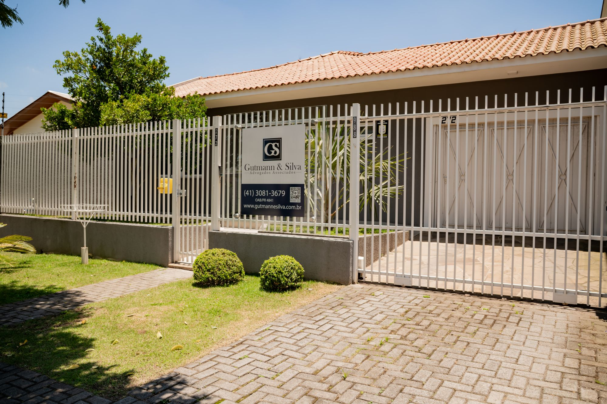
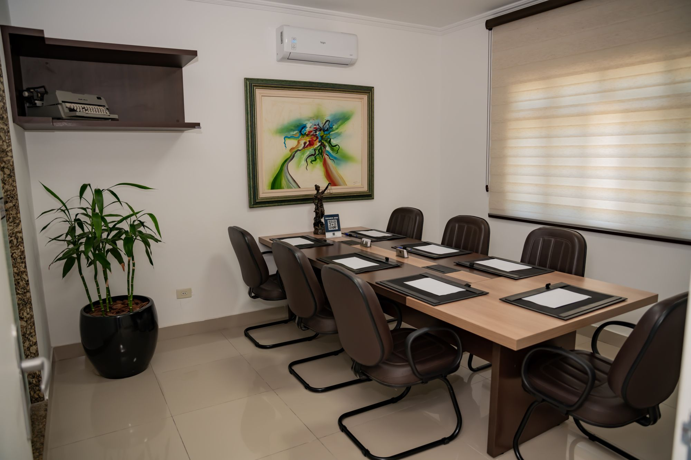

Propósito
Proteção jurídica de verdade
Proporcionar verdadeira proteção jurídica e apresentar soluções que gerem segurança e credibilidade além do esperado.
O Escritório
Fundado em 1994, o Gutmann & Silva Advogados Associados nasceu no Paraná com um propósito simples: oferecer assessoria jurídica séria, próxima e tecnicamente sólida para empresas e famílias. Ao longo de três décadas, esse propósito não mudou — o que mudou foi o tamanho da equipe e a amplitude das áreas que passamos a atender.Fundado em 1994, o Gutmann & Silva oferece assessoria jurídica séria, próxima e tecnicamente sólida para empresas e famílias.


Nossa trajetória
O escritório começou com uma atuação mais concentrada e, com o tempo, estruturou departamentos dedicados às áreas Empresarial, Cível, Trabalhista, Tributária, de Família & Sucessões e Previdenciária. Essa especialização por área permite que cada cliente seja atendido por profissionais com domínio técnico específico sobre o tema em questão, sem perder a visão integrada que um escritório de porte médio consegue oferecer.Com departamentos dedicados a cada área, cada cliente é atendido por profissionais com domínio técnico sobre o tema, sem perder a visão integrada.
Hoje, com sede em São José dos Pinhais, no Paraná, e registros ativos nas seccionais da OAB do Paraná, São Paulo e Santa Catarina, o Gutmann & Silva atende clientes com operações que ultrapassam as fronteiras estaduais, mantendo o mesmo padrão de atendimento em qualquer frente.Com sede em São José dos Pinhais/PR e registros na OAB do PR, SP e SC, atendemos clientes com operações em mais de um estado.
Três décadas de atuação contínua, do Paraná para três estados.
1994
Fundação do escritório no Paraná, com foco em atendimento próximo a empresas e famílias.
Ao longo dos anos
Expansão da atuação para São Paulo e Santa Catarina, com novos registros na OAB/SP e OAB/SC, e estruturação das áreas de especialização (Empresarial, Tributário, Trabalhista, Cível, Família & Sucessões e Previdenciário), com a equipe crescendo para os atuais 30+ profissionais.Expansão para São Paulo e Santa Catarina (OAB/SP e OAB/SC), estruturação das áreas e equipe com 30+ profissionais.
2022, 2024 e 2025
Eleito Melhor Escritório de Advocacia do Ano em São José dos Pinhais.
Hoje
30 anos de história, presença em três estados e reconhecimento consolidado no mercado jurídico paranaense.
Os princípios que orientam cada atendimento do escritório.
Propósito
Proporcionar verdadeira proteção jurídica e apresentar soluções que gerem segurança e credibilidade além do esperado.
Visão
Solucionar conflitos, construir relacionamentos de confiança e proporcionar um impacto positivo que torne o ambiente jurídico mais justo para todos.
Valores
Antes de qualquer indicação jurídica, buscamos entender o contexto completo do cliente — seja uma empresa em expansão, uma família organizando sua sucessão ou um profissional com uma dúvida trabalhista ou previdenciária. Essa etapa de escuta é o que orienta cada estratégia que construímos.Antes de qualquer indicação jurídica, buscamos entender o contexto completo do cliente. Essa escuta orienta cada estratégia.
Atuamos em conformidade com o Código de Ética e Disciplina da OAB e com as normas que regulam a publicidade da advocacia no Brasil. Nossa comunicação busca informar, nunca prometer resultados ou comparar nossa atuação com a de outros profissionais.Atuamos em conformidade com o Código de Ética e Disciplina da OAB e com as normas de publicidade da advocacia. Nossa comunicação busca informar, nunca prometer resultados.
Entre em contato com o Gutmann & Silva e converse com uma equipe preparada para entender sua situação antes de indicar qualquer caminho.